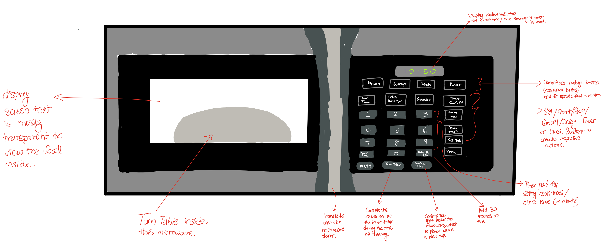
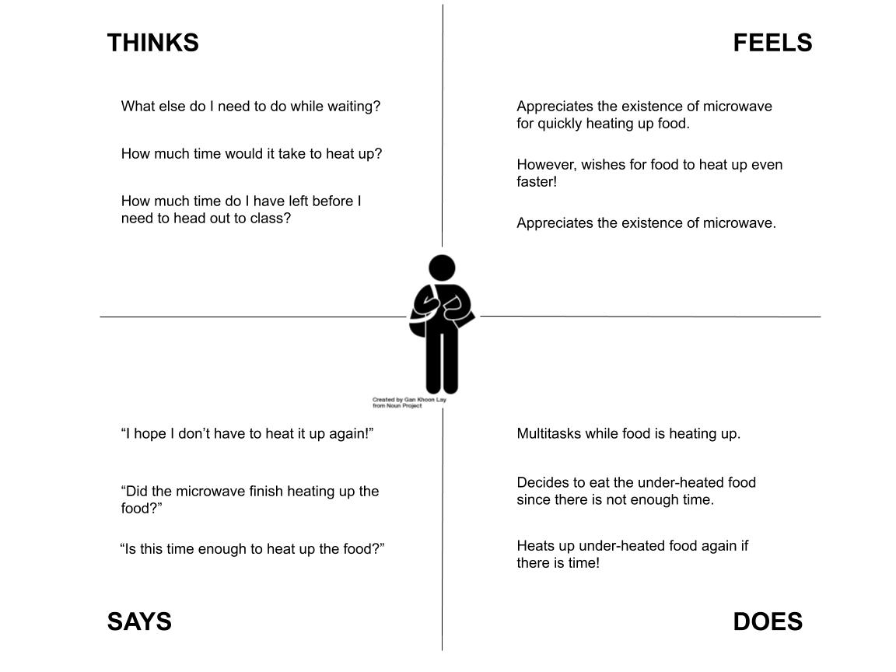
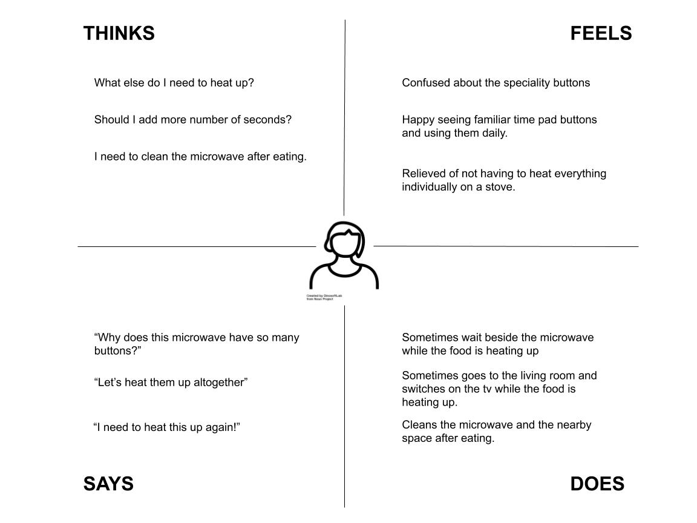
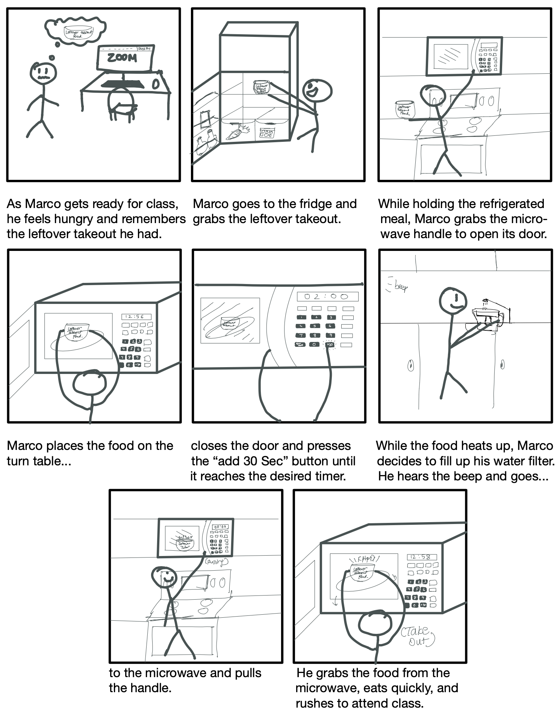

User Interviews
Persona Creation
Empathy Maps
Storyboarding
Zoom
Google Document
Notability
One of the first steps in creating user-friendly designs of an interface is understanding how users interact with the interface itself. This project outlines how UIUX designers typically go about fulfilling this step.
We will explore a Microwave’s components, how users feel about them, and create personas and storyboards to illustrate Microwave’s typical users and usages.
Since 2020 has mostly been us staying at our homes, I chose to observe standard household equipment, which is available for users of almost all ages, i.e., Microwave. This device is used to heat food quickly, which can be performed by selecting various heat and timer options, as illustrated below:
One of the methods of gathering interface interaction is to observe how one usually interacts with the interface. During this project’s entire period, I observed several individuals using the microwave in their natural state. Some of the key observations gathered were:
Almost all users did not hesitate or question how to start the microwave and use it.
Some users waited beside the microwave while others worked on other tasks while the food was heating up.
Almost all of them reacted to the microwave’s beep sound and went towards the microwave to open its door. They seem to know that the sound indicated the timer’s end, and the food is likely to be heated up.
The frequency of users using the number / timer pad was a lot more than using the "specialty" ones, which are presented as buttons for convenience cooking.
Another way to gather interface interaction is by directly confronting the users and interviewing them with various questions to understand how they use the interface and what they feel about them. The questions that I asked my interviewees are as follows:
What was your first impression of the microwave you are currently using?
What feature of the microwave do you most use on an average day?
What feature of the microwave do you least use on an average day?
How often do you use the microwave on average per day?
What was the most intuitive about using the microwave?
What was the least intuitive about using the microwave?
What do you like about the microwave?
What do you not like about the microwave?
What kind of food do you often heat in the microwave?
Any general comments about the microwave?
User A: This user uses the microwave about once per day. Their first reaction to the appliance was that it had a lot of buttons. While they were comfortable with the timer pad and the general operation of how to start heating up food, they were unsure how to use the other buttons (specialty ones). They liked how spacious the microwave is on the inside. This allowed them to heat up multiple dishes (usually stir-fried, cooked vegetables, and meat) at once! However, they felt that the number / timer pad took too much space. If they were to improve this, maybe a digital timer interface would be nice! In addition, they wished for an option to heat up the food even faster because of their tight schedule.
User B: This user uses the microwave about four times per day. They had a similar reaction to User A with respect to how there were many buttons. Nevertheless, they were happy that this appliance existed as it allowed them to heat up food quickly. This saved them time as they are also typically on a tight schedule. They were most familiar with the start and stop buttons and were wary of using the specialty ones. Hence, they stuck to the familiar aspects of the interface. They would use the microwave to heat up cooked food and cook dishes such as rice. They wished for the interface to have better guidance on using the specialty buttons since they would like to use as many aspects of the interface as possible. In addition, they would like the timer pad to be more customizable. Currently, they only have 30 seconds or 1 minute increments. It would be nice to have other increment values.
User C: This user uses the microwave about 4-6 times per day. They were already familiar with the interface when they started using the microwave they are using now. One of the features that they found especially convenient, is the defrosting option. While they also used the timer pad frequently, they also used some of the specialty options. They found all of them to be helpful to warm food easily. However, it took them time to understand how to use the specialty buttons. Hence, similar to User B, they wished for better instructions on how to use them. To be more specific, they would like to understand how much time they should use to heat up food in the respective specialty buttons. Apart from that, they really appreciate the buzzer sound of the microwave. It makes them happy as they know that the food is likely ready, and they can dig in right away!
To represent the spectrum of users that I have observed, I have created 2 personas!
This user has a busy schedule and is often multitasking. Hence, they value time, comfort, and convenience. Usually, while waiting for the food to heat up, they move on to other tasks and then pick up food once they are done.
While the user is usually at home, they like to perform many tasks ranging from household chores to engaging in conversations with friends and family. They tend to stick to familiar interfaces. They are wary of trying new functionality, but they have recently tried using new functionalities like defrost.
Storyboarding is an effective way to capture, relate, and explore experiences in the design process. After gathering the above insights, I have developed the following storyboard to display a user’s typical interaction with the microwave interface.
This was my first project in my UIUX course at Brown. It was a great learning experience in terms of understanding how crucial it is to interview without showcasing much of a bias as well as exploring ways to represent how various users have different ways to interact with an interface.